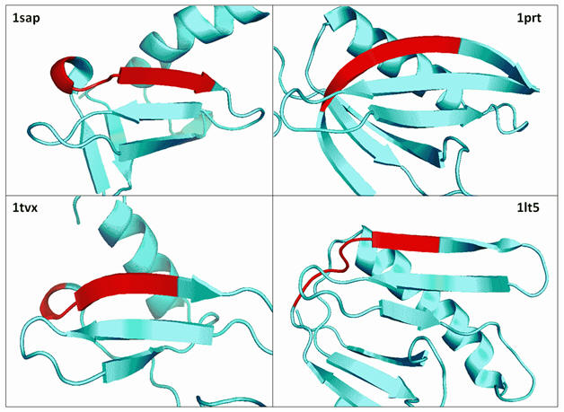

| MUSCLE manual |
| BALIBASE "core blocks" do not have conserved secondary structure |
|
 "Core block" in BALIBASE set BB20029 The first core block in BB20029 is highlighted in red on each structure. These are Pymol cartoons make using secondary structure assignments in the PDB records. While the last few residues in the block are all in a beta strand with a possible distant relationship, the first few residues have different secondary structure, including a loop in 1lt5, and the annotation of this region as a reliably aligned core block with conserved secondary structure is not justified. These structures are so far diverged that homology is not clear even at the level of secondary structure units. BALIBASE implicitly claims that these structures can be reliably aligned at the level of individual residues, but in my opinion this is not possible. |